2
损失函数和正则化
损失函数是允许我们测量机器学习模型所产生的误差的代理。他们定义了要解决的问题的结构，并为旨在最大化或最小化损失函数的优化步骤准备了算法。通过这一过程，我们确保选择所有参数，以便尽可能减少误差。在这一章中，我们将讨论基本损失函数及其性质。我还包括了一个关于正则化概念的专门部分；正则化模型对过度拟合更有弹性，并且可以获得超出简单损失函数限制的结果。
特别是，我们将讨论:
- 定义损失和成本函数
- 成本函数的例子，包括均方误差和Huber和hinge成本函数
- 正规化
- 正则化的例子，包括脊、套索、弹性网和早期停止技术
我们将从与损失和成本函数相关的一些定义开始。
定义损失和成本函数
许多机器学习问题可以通过一个测量训练误差的代理函数来表达。显而易见的隐含假设是，通过减少训练和验证错误，准确性增加，并且算法达到其目标。
如果我们考虑一个有监督的场景(半监督的场景也有很多考虑)，有有限的数据集 X 和 Y :
我们可以将单个数据点的通用损失函数定义为:
J 是整体参数集的函数，必须与真实标签和预测标签之间的误差成比例。
损失函数的一个非常重要的性质是凸性。在很多真实案例中，这是一个几乎不可能的条件；然而，寻找凸损失函数总是有用的，因为它们可以通过梯度下降法容易地优化。我们将在第十章、时序分析介绍中讨论这个话题。
然而，现在，考虑一个损失函数作为我们的训练过程和纯数学优化之间的媒介是有用的。缺少的环节是完整的数据。正如已经讨论过的， X 是从pT23】数据中提取的，所以它应该代表真实的分布。因此，当我们最小化损失函数时，我们考虑的是点的潜在子集，而不是整个真实数据集。
在许多情况下，这不是一个限制。如果偏差为零且方差足够小，则得到的模型将表现出良好的泛化能力，具有较高的训练和验证精度；然而，考虑到数据生成过程，引入另一个称为预期风险的度量是有用的:
该值可以解释为从pT30】数据中提取的所有可能样本的损失函数的平均值。然而，由于 p 数据通常是连续的，因此需要考虑一个期望值并整合所有可能的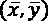对，这通常是一个棘手的问题。预期风险的最小化意味着全局准确性的最大化，这反过来又对应于最优结果。
另一方面，在现实世界的场景中，我们使用有限数量的训练样本。既然是这样，最好定义一个成本函数，它通常也被称为损失函数，不要与对数似然混淆:
这是我们要最小化的实际函数。除以样本数量(一个没有任何影响的因素)，它也被称为经验风险。之所以称之为，是因为它是基于有限样本 X 的预期风险的近似值。换句话说，我们希望找到一组参数，以便:
当成本函数有两个以上的参数时，很难甚至不可能理解它的内部结构。但是，我们可以使用二维图表分析一些潜在的情况:
二维场景中不同种类的点
- 起点，这里的成本函数通常因误差而非常高。
- 局部最小值，这里梯度为零，二阶导数为正。它们是最佳参数集的候选对象，但不幸的是，如果凹度不太深，惯性运动或噪声很容易将点移开。
- 脊线(或局部极大值)，这里梯度为零，二阶导数为负。它们是不稳定点，因为即使是最小的扰动也会让它们逃向成本更低的地区。
- 高原，或者表面几乎平坦，坡度接近于零的区域。逃离平台期的唯一方法是保留一些剩余动能——我们将在第18章、优化神经网络中讨论神经优化算法时讨论这个概念。
- 全局最小值，我们希望达到的优化成本函数的点。
即使当模型具有少量参数时，局部最小值是可能的，但是当模型具有大量参数时，它们变得非常不可能。事实上，一个 n 维点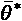是一个凸函数的局部最小值(这里，我们假设 L 是凸的),仅当:
第二个条件强加了一个正定的Hessian矩阵——等价地，由第一个 n个行和第 n个列组成的所有主子式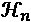必须是正的——因此它的所有特征值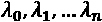必须是正的。这个概率随着参数个数的增加而减小(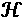是一个 n × n 方阵，有 n个特征值)，在权值数量可以是百万量级，甚至更多的深度学习模型中变得接近于零。对完整的数学证明感兴趣的读者可以阅读Dube S .，高维空间，深度学习和对抗性例子，arXiv:1801.00634【cs。简历】。
因此，更常见的情况是考虑是否存在鞍点，其中特征值具有不同的符号，并且正交方向导数为零，即使这些点既不是局部最大值也不是局部最小值。例如，考虑下面的情节:
三维场景中的鞍点
表面在形状上非常类似于马鞍，如果我们将点投影到正交平面上， XZ 是最小值，而在另一个平面上( YZ 是最大值。直截了当的说鞍点是相当危险的，因为很多更简单的优化算法会变慢甚至停止，失去找准方向的能力。在第18章、优化神经网络中，我们将讨论一些能够缓解这类问题的方法，允许深度模型收敛。
成本函数的例子
在本节中，我们将讨论在分类和回归任务中使用的一些常见的成本函数。在接下来的几章中，我们的例子中会反复采用其中的一些，特别是当我们讨论浅层和深层神经网络的训练过程时。
均方误差

该函数在其定义域的每一点都是可微的，并且是凸的，因此可以使用随机梯度下降 ( SGD )算法对其进行优化。这个成本函数是使用普通或广义最小二乘算法进行回归分析的基础，例如，可以证明估计值总是无偏的。
然而，在有异常值的回归任务中使用它有一个缺点。其值总是二次的，因此，当预测值和实际异常值之间的距离较大时，相对误差较大，这可能导致不可接受的校正。
胡伯成本函数
如前所述，均方误差对异常值并不稳健，因为它总是二次的，与实际值和预测值之间的距离无关。为了克服这个问题，可以采用 Huber成本函数，它是基于阈值tT7】H的，因此对于小于ttH的距离，它的行为是二次的，而对于大于ttH的距离，它变成线性的，减少了误差的实体，从而降低了异常值的相对重要性。
解析表达式为:
铰链成本函数
这个成本函数由支持向量机 ( SVM )算法采用，目标是最大化支持向量所在的分离边界之间的距离。其解析表达式为:
与其他示例相反，该成本函数没有使用经典SGD方法进行优化，因为它在以下情况下不可微:
为此，SVM算法使用二次规划技术进行优化。
范畴交叉熵
分类交叉熵是最分散的分类成本函数，被逻辑回归和大多数神经架构采用。通用分析表达式为:

这个成本函数是凸的，可以很容易地使用SGD技术进行优化。根据信息论，分布的熵 p 是不确定性数量的度量——如果使用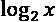则用位表示，如果使用位则用自然对数表示——特定概率分布的携带。例如，如果我们掷一枚公平的硬币，那么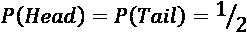根据伯努利分布。因此，这种离散分布的熵是:
不确定性等于1比特，这意味着在任何实验之前都有2种可能的结果，这是显而易见的。如果我们知道硬币是装的， P(头)= 0.1 ， P(尾)= 0.9 会怎么样？熵现在是:
由于我们的不确定性现在非常低——我们知道在90%的情况下，结果将是反面——熵小于半个比特。这个概念必须解释为一个连续的测量，这意味着一个单一的结果很可能出现。当 P(头部)→ 0 和 P(尾部)→ 1 渐近需要0位时的极端情况，因为不再有不确定性，并且概率分布是退化的。
熵的概念，以及交叉熵和其他信息理论公式，可以通过使用积分而不是总和来扩展到连续分布。比如正态分布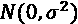的熵是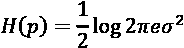。通常，熵与方差或分布的分布成比例。
这是一个直观的概念，事实上；方差越大，潜在结果被选择的概率相似的区域就越大。当潜在的候选结果集增加时，不确定性增加，我们需要为消除不确定性支付的bit或NAT的价格增加。在硬币的例子中，我们需要为一个公平的结果支付1比特，而当我们已经知道 P(Tail) = 0.9 时，只需要支付0.47比特；我们的不确定性降低了很多。
类似地，交叉熵定义在两个分布 p 和 q 之间:
让我们假设p是我们正在处理的数据生成过程。 H(P，q) 是什么意思？考虑到表达式，我们正在做的是计算期望值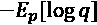，而熵计算期望值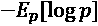。因此，如果 q 是 p 的近似值，则交叉熵测量我们在使用模型 q 代替原始数据生成过程时引入的额外不确定性。不难理解，我们仅仅通过使用真实基础过程的近似来增加不确定性。
事实上，如果我们正在训练一个分类器，我们的目标是创建一个模型，它的分布尽可能地类似于pT14】数据。这种情况可以通过最小化两种分布之间的Kullback-Leibler散度来实现:
在前面的表达式中，pT18】M是模型生成的分布。现在，如果我们重写散度，我们得到:
第一项是数据生成分布的熵，它不依赖于模型参数，而第二项是交叉熵。因此，如果我们最小化交叉熵，我们也最小化Kullback-Leibler散度，迫使模型重现一个与pT22】数据非常相似的分布。这意味着我们正在减少由近似引起的额外的不确定性。这是关于交叉熵成本函数为什么是分类问题的极好选择的非常优雅的解释。
正规化
当一个模型是病态的或者倾向于过度拟合的时候，正则化提供了一些有效的工具来缓解这些问题。从数学的观点来看，正则化是添加到成本函数的惩罚，以对参数的演变施加额外的条件:
参数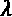控制正则化的强度，通过函数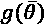表示。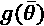的一个基本条件是它必须是可微的，这样新的复合成本函数仍然可以使用SGD算法进行优化。一般来说，可以使用任何常规函数；然而，我们通常需要一个函数来对比参数的无限增长。
为了理解这一原理，让我们考虑下图:
使用线性曲线(左)和抛物线(右)进行插值
在第一张图中，模型是线性的，有两个参数，而在第二张图中，它是二次的，有三个参数。我们已经知道，第二个选项更容易过度拟合，但如果我们应用正则化项，就有可能避免第一个二次参数的增长，并将模型转换为线性化版本。
当然，选择低容量模型和应用正则化约束是有区别的。在第一种情况下，我们放弃了额外容量提供的可能性，随之而来的是大偏差的风险，而对于正则化，我们保持相同的模型，但对其进行优化，以减少方差，仅略微增加偏差。我希望清楚的是，正则化总是导致次优模型 M' ，特别是，如果原始的 M 是无偏的， M' 将与 和所使用的正则化类型成比例地偏置。
和所使用的正则化类型成比例地偏置。
一般来说，如果一个代价函数相对于一个训练集的绝对最小值是cT41】opt，任何带有c>copt的模型都是次优的。这意味着训练误差更大，但是泛化误差可能被更好地控制。
事实上，一个训练有素的模型可以学习训练集的结构并达到最小损失，但是，当检查一个新样本时，性能会差得多。
即使在数学上不是很严谨，我们也可以说正则化经常充当避免完美收敛的刹车。通过这样做，它将模型保持在泛化误差较低的区域，这通常是机器学习的主要目标。因此，在偏差-方差权衡的背景下，这个额外惩罚可以被接受。
当小偏差是方差大幅减少的结果(即，较小的泛化误差)时，它是可以接受的；然而，我强烈建议您不要将正则化作为一种黑盒技术，而是检查(例如，使用交叉验证)哪个值产生了最佳结果，这是一种折衷。
规则化技术的例子
L 2 或脊正则化
L 2 或脊正则化，又称吉洪诺夫正则化，是基于的平方L2-范数的参数向量:
这种惩罚避免了参数的无限增长-因此，它也被称为重量收缩-当模型病态时，或者由于样本不完全独立而存在多重共线性(这是一种相对常见的情况)时，它特别有用。
岭(L 2 正则化
以零为中心的圆代表脊线边界，而阴影面是原始的代价函数。在没有正则化的情况下，最小值( w 1 ， w 2 )的大小(例如，与原点的距离)大约是通过应用脊约束获得的大小的两倍，从而确认了预期的收缩。
当将应用到用普通最小二乘法 ( OLS )算法求解的回归中时，可以证明总是存在一个岭系数，因此权重相对于OLS权重缩小了。同样的结果，加上一些限制，可以扩展到其他成本函数。
此外，吴恩达(在Ng A. Y .，特征选择，L1对L2正则化，和旋转不变性，ICML，2004)证明了 L 2 正则化，应用于大多数分类算法，允许我们获得旋转不变性。换句话说，如果训练集被旋转，正则化模型将产生与原始模型相同的预测分布。要记住的另一个基本方面是LT54】2-正则化缩小了权重，与数据的规模无关。因此，如果要素的比例不同，结果可能会比预期的更糟。
考虑一个简单的两变量线性模型，很容易理解这个概念，y = ax1+bx1+c。由于 L 2 的控制系数单一，因此对 a 和 b 的效果相同(不包括截距 c )。如果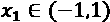和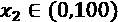，收缩对xT81】1的影响要远远大于xT85】2。
因此，我们建议在应用正则化之前缩放数据集。这种方法的其他重要属性将在整本书中讨论，当具体的算法介绍。
L 1 或套索正规化
当Ridge 将所有权重与其重要性成反比缩小时，Lasso可以将最小的权重移至零，从而创建一个稀疏的参数向量。
数学证明超出了本书的范围；然而，通过考虑下面的二维图表，可以直观地理解它:
套索(L 1 )正规化
零中心正方形代表二维场景中的套索边界(在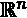中它将是一个超菱形)。如果我们考虑一条普通的线，该线与正方形相切的概率在角上更高，这里至少有一个参数为空——在二维场景中正好有一个参数。一般来说，如果我们有一个向量凸函数 f(x) (我们在第7章、高级聚类和无监督模型中提供了凸性的定义)，我们可以定义:
任一Lp-范数都是凸的，凸函数的和一样，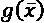也是凸的。正则项总是非负的，因此最小值对应于零向量的范数。
在最小化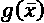时，我们还需要考虑以原点为中心的球中范数的梯度的贡献，这里不存在偏导数。增加 p 的值，范数在原点周围变得平滑，并且 的偏导数接近零。
的偏导数接近零。
另一方面，排除L0-范数和所有具有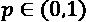的范数允许甚至更强的稀疏性，但是是非凸的(即使 L 0 当前在量子算法QBoost中被采用)。随着 p = 1 ，根据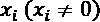的符号，偏导数总是+1或-1。因此，对于 L 1 -norm来说更容易将最小的分量推到零，因为对最小化的贡献(例如，具有梯度下降)与xT53】I无关，而 L 2 -norm在接近原点时降低其速度。
这是使用L1-范数实现的稀疏性的非严格解释。在实践中，我们还需要考虑术语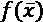，它限制了全局最小值的值；然而，它可以帮助读者对这个概念有一个直观的理解。在Sra S .，Nowozin S .，Wright S. J .(编辑)，机器学习优化，麻省理工学院出版社，2011年，可以找到更进一步的，数学上更严格的细节。
当需要数据集的稀疏表示时，套索正则化特别有用。例如，我们可能对找到对应于一组图像的特征向量感兴趣。由于我们预计会有许多特征，但每个图像中只存在这些特征的子集，因此应用Lasso正则化允许我们强制所有最小的系数变为零，这有助于我们抑制次要特征的存在。
另一个潜在的应用是潜在语义分析，我们的目标是根据有限数量的主题来描述属于一个语料库的文档。所有这些方法可以总结为一种称为稀疏编码的技术，其目标是通过提取最具代表性的原子来降低数据集的维度，使用不同的方法来实现稀疏性。
L 1 正则化的另一个重要属性涉及其执行由稀疏性引起的隐式特征选择的能力。在一般情况下，数据集还可能包含无助于提高分类精度的不相关要素。这可能是因为真实世界的数据集通常是冗余的，数据收集者更感兴趣的是它们的可读性，而不是它们在分析中的用途。有许多技术(其中一些在Bonaccorso G .， Machine Learning Algorithms，Second Edition ，Packt，2018中描述)可用于仅选择那些真正传输独特信息片段的特征，并丢弃其余的特征；不过LT14】1特别有帮助。
首先，它是自动的，不需要任何预处理步骤。这在深度学习中极其有用。此外，正如Ng在前述论文中所指出的，如果数据集包含 n 个特征，那么将精确度提高到超过预定义阈值所需的最小样本数量会受到冗余或不相关特征数量的对数的影响。
这意味着，例如，如果数据集 X 包含1000个点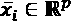，并且当 k < p 特征不相关时，当所有特征都是信息性的时，用该样本量实现的最佳精度是，我们需要大约1000个+ O (log k )样本。这是对原始结果的简化；举个例子，如果 p = 5000和500个特征不相关，假设最简单的情况，我们大约需要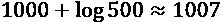个数据点。
这一结果非常重要，因为获得大量新样本通常既困难又昂贵，尤其是在实验环境中获得的样本(例如，社会科学、药理学研究等)。在继续之前，让我们考虑一个包含500个点的合成数据集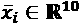，它只有五个信息特征:
from sklearn.datasets import make_classification
from sklearn.preprocessing import StandardScaler
X, Y = make_classification(n_samples=500, n_classes=2, n_features=10, n_informative=5,
n_redundant=3, n_clusters_per_class=2, random_state=1000)
ss = StandardScaler()
X_s = ss.fit_transform(X)
我们现在可以用整个数据集拟合两个逻辑回归实例:第一个使用LT35】2正则化，第二个使用LT39】1。在这两种情况下，强度保持不变:
from sklearn.linear_model import LogisticRegression lr_l2 = LogisticRegression(solver='saga', penalty='l2', C=0.25, random_state=1000) lr_l1 = LogisticRegression(solver='saga', penalty='l1', C=0.25, random_state=1000) lr_l2.fit(X_s, Y) lr_l1.fit(X_s, Y)
可以看出，在这两种情况下，10倍交叉验证产生了大致相同的平均准确度。但是，在这种情况下，我们更感兴趣的是检查 L 1 的特征选择属性；因此，我们将比较两个模型的10个系数，可用作为实例变量coef_。结果如下图所示:
L1(左)和L2(右)正则化的逻辑回归系数
如你所见， L 2 正则化倾向于几乎均匀地收缩所有系数，排除9和10的优势，而 L 1 执行特征选择，通过仅保留5个非空系数。这个结果与数据集的结构是一致的，因为它只包含5个信息特征，因此，好的分类算法可以去除剩余的特征。
记住我们经常需要创建可解释的模型是有帮助的。也就是说，我们经常需要创建其输出可以立即追溯到其原因的模型。当有许多参数时，这个任务变得更加困难。Lasso的使用允许我们排除所有那些相对于主要组来说重要性是次要的特征。这样，得到的模型更小，而且更容易解释。
作为一般建议，特别是当使用线性模型时，我邀请读者进行特征选择以去除所有非决定性因素；并且 L 1 正则化是避免额外预处理步骤的极佳选择。
在讨论了LT3】1和LT7】2正则化的主要属性之后，我们现在可以解释如何将它们组合起来以利用各自的优势。
弹力网
在许多实际情况下，为了强制权重收缩和全局稀疏，应用脊和套索正则化是有用的。通过使用 ElasticNet 正则化是可能的，定义为:
每个正则化的强度由参数和控制。在鼓励稀疏性的同时，只要有必要减轻过度拟合的影响，ElasticNet就能产生极好的结果。当我们讨论深度学习架构时，我们将应用所有这些正则化技术。
提前停止
尽管是一种纯粹的正则化技术，但当所有其他防止过度拟合和最大化验证精度的方法都失败时，提前停止通常被认为是最后的手段。在许多情况下，尤其是在深度学习场景中，尽管SVM和其他更简单的分类器也可能发生这种情况，但考虑到训练和验证成本函数，可以观察到训练过程的典型行为:
在U型曲线上升阶段开始前提前停止的例子
在第一个时期期间，两个成本都降低，但是有可能在一个阈值时期es之后，验证成本开始增加。如果我们继续训练过程，这将导致过度适应训练集并增加方差。
出于这个原因，当没有其他选择时，就有可能过早地停止训练过程。为了做到这一点，有必要在新的迭代开始之前存储最后一个参数向量，并且在没有改进或精度恶化的情况下，停止该过程并恢复最后一组参数。
如前所述，这一过程决不能被视为最佳选择，因为更好的模型或改进的数据集可以产生更高的性能。如果提前停止，就无法验证替代方案，因此只能在流程的最后阶段采用，而不能在流程开始时采用。
Keras等许多深度学习框架都包含帮助器来实现早期停止回调。但是，检查最后一个参数向量是存储在最后一个时期之前的参数向量还是对应于es的参数向量非常重要。在这种情况下，重复训练过程可能是有帮助的，在ess之前的时间点停止训练过程，此时的最小验证成本已经达到。
总结
在这一章中，我们介绍了损失和成本函数，首先作为预期风险的代理，然后我们详细介绍了在优化问题中可能遇到的一些常见情况。我们还展示了一些常见的成本函数，以及它们的主要特性和具体应用。
在最后一部分中，我们讨论了正则化，解释了它如何减轻过度拟合的影响并导致稀疏。特别是，Lasso的使用可以通过强制所有次要系数等于0来帮助数据科学家执行自动特征选择。
在下一章第3章，半监督学习介绍，我们将介绍半监督学习，重点关注直推式和归纳式学习的概念。
延伸阅读
- Darwiche A .，人类水平的智力还是动物般的能力？《美国计算机学会通讯》，第61卷，2018年10月
- Crammer K .，Kearns M .， Wortman J .，从多个来源学习，机器学习研究杂志，2008年9月
- Mohri M .，Rostamizadeh A .，Talwalkar A .，机器学习基础，第二版，麻省理工学院出版社，2018年
- 威廉特·l .，一种可学的理论，《美国计算机学会通讯》，第27期，1984年
- Ng A. Y .，特征选择，L1与L2正则化，以及旋转不变性，ICML，2004
- Dube S .，高维空间，深度学习和对抗性例子，arXiv:1801.00634 [cs。简历]
- Sra S .，Nowozin S .，Wright S. J .(编辑)，机器学习的优化，麻省理工学院出版社，2011年
- Bonaccorso G .，机器学习算法，第二版，Packt，2018